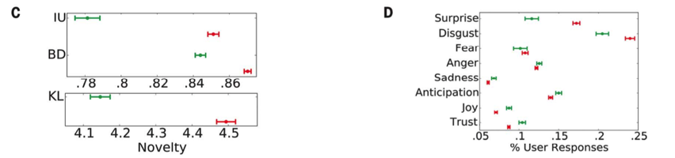

基于NRC字典的情感分析¶
NRC词典为加拿大国家研究委员会信息技术研究所(Institute for Information Technology, National Research Council Canada. )组织制作的基于众包方式标注出的词典。
Mohammad, Saif M., and Peter D. Turney. “Crowdsourcing a word–emotion association lexicon.” Computational Intelligence 29, no. 3 (2013): 436-465.
http://sentiment.nrc.ca/lexicons-for-research/
THE SENTIMENT AND EMOTION LEXICONS (click to download the complete bundle, 100Mb)
Individual lexicons for download:
Manually created lexicons: NRC Emotion Lexicon NRC Emotion Intensity Lexicon NRC Valence, Arousal, and Dominance (VAD) Lexicon NRC Sentiment Composition Lexicons (SCL-NMA, SCL-OPP, SemEval-2015 English Twitter, SemEval-2016 Arabic Twitter) NRC Word-Colour Association Lexicon
Automatically generated lexicons: NRC Hashtag Emotion Lexicon NRC Hashtag Sentiment Lexicon NRC Hashtag Affirmative Context Sentiment Lexicon and NRC Hashtag Negated Context Sentiment Lexicon NRC Emoticon Lexicon (a.k.a. Sentiment140 Lexicon) NRC Emoticon Affirmative Context Lexicon and NRC Emoticon Negated Context Lexicon
Vosoughi et al., The spread of true and false news online. Science 359, 1146–1151 (2018) 9 March 2018
We categorized the emotion in the replies by using the leading lexicon curated by the National Research Council Canada (NRC), which provides a comprehensive list of ~140,000 English words and their associations with eight emotions
False news was more novel than true news, which suggests that people were more likely to share novel information. Whereas false stories inspired fear, disgust, and surprise in replies, true stories inspired anticipation, sadness, joy, and trust.

import pandas as pd
lexion_df = pd.read_excel('./Textmining/NRC-Emotion-Lexicon-v0.92-In105Languages-Nov2017Translations.xlsx')
lexion_df.head()
| English (en) | Afrikaans (af) | Albanian (sq) | Amharic (am) | Arabic (ar) | Armenian (hy) | Azeerbaijani (az) | Basque (eu) | Belarusian (be) | Bengali (bn) | ... | Positive | Negative | Anger | Anticipation | Disgust | Fear | Joy | Sadness | Surprise | Trust | |
|---|---|---|---|---|---|---|---|---|---|---|---|---|---|---|---|---|---|---|---|---|---|
| 0 | aback | uit die veld geslaan | prapa | ተጭኗል | الى الوراء | շեղում | sanki | aback | ззаду | পশ্চাতে | ... | 0 | 0 | 0 | 0 | 0 | 0 | 0 | 0 | 0 | 0 |
| 1 | abacus | abakus | numërator | abacus | طبلية تاج | անբավարարություն | abacus | abako | абака | গণনা-যন্ত্রবিশেষ | ... | 0 | 0 | 0 | 0 | 0 | 0 | 0 | 0 | 0 | 1 |
| 2 | abandon | verlaat | braktis | ውጣ | تخلى | լքել | tərk et | bertan behera | адмовіцца ад | বর্জিত করা | ... | 0 | 1 | 0 | 0 | 0 | 1 | 0 | 1 | 0 | 0 |
| 3 | abandoned | verlate | braktisur | ተትቷል | مهجور | լքված | tərk etdi | abandonatutako | закінуты | পরিত্যক্ত | ... | 0 | 1 | 1 | 0 | 0 | 1 | 0 | 1 | 0 | 0 |
| 4 | abandonment | verlating | braktisje | ማቋረጥ | التخلي عن | հրաժարվելով | ləğv | abandono | пакіданне | বিসর্জন | ... | 0 | 1 | 1 | 0 | 0 | 1 | 0 | 1 | 1 | 0 |
5 rows × 115 columns
lexion_df.columns.tolist()
['English (en)',
'Afrikaans (af)',
'Albanian (sq)',
'Amharic (am)',
'Arabic (ar)',
'Armenian (hy)',
'Azeerbaijani (az)',
'Basque (eu)',
'Belarusian (be)',
'Bengali (bn)',
'Bosnian (bs)',
'Bulgarian (bg)',
'Catalan (ca)',
'Cebuano (ceb)',
'Chinese (Simplified) (zh-CN)',
'Chinese (Traditional) (zh-TW)',
'Corsican (co)',
'Croatian (hr)',
'Czech (cs)',
'Danish (da)',
'Dutch (nl)',
'English (en).1',
'Esperanto (eo)',
'Estonian (et)',
'Finnish (fi)',
'French (fr)',
'Frisian (fy)',
'Galician (gl)',
'Georgian (ka)',
'German (de)',
'Greek (el)',
'Gujarati (gu)',
'Haitian Creole (ht)',
'Hausa (ha)',
'Hawaiian (haw)',
'Hebrew (iw)',
'Hindi (hi)',
'Hmong (hmn)',
'Hungarian (hu)',
'Icelandic (is)',
'Igbo (ig)',
'Indonesian (id)',
'Irish (ga)',
'Italian (it)',
'Japanese (ja)',
'Javanese (jw)',
'Kannada (kn)',
'Kazakh (kk)',
'Khmer (km)',
'Korean (ko)',
'Kurdish (ku)',
'Kyrgyz (ky)',
'Lao (lo)',
'Latin (la)',
'Latvian (lv)',
'Lithuanian (lt)',
'Luxembourgish (lb)',
'Macedonian (mk)',
'Malagasy (mg)',
'Malay (ms)',
'Malayalam (ml)',
'Maltese (mt)',
'Maori (mi)',
'Marathi (mr)',
'Mongolian (mn)',
'Myanmar (Burmese) (my)',
'Nepali (ne)',
'Norwegian (no)',
'Nyanja (Chichewa) (ny)',
'Pashto (ps)',
'Persian (fa)',
'Polish (pl)',
'Portuguese (Portugal, Brazil) (pt)',
'Punjabi (pa)',
'Romanian (ro)',
'Russian (ru)',
'Samoan (sm)',
'Scots Gaelic (gd)',
'Serbian (sr)',
'Sesotho (st)',
'Shona (sn)',
'Sindhi (sd)',
'Sinhala (Sinhalese) (si)',
'Slovak (sk)',
'Slovenian (sl)',
'Somali (so)',
'Spanish (es)',
'Sundanese (su)',
'Swahili (sw)',
'Swedish (sv)',
'Tagalog (Filipino) (tl)',
'Tajik (tg)',
'Tamil (ta)',
'Telugu (te)',
'Thai (th)',
'Turkish (tr)',
'Ukrainian (uk)',
'Urdu (ur)',
'Uzbek (uz)',
'Vietnamese (vi)',
'Welsh (cy)',
'Xhosa (xh)',
'Yiddish (yi)',
'Yoruba (yo)',
'Zulu (zu)',
'Positive',
'Negative',
'Anger',
'Anticipation',
'Disgust',
'Fear',
'Joy',
'Sadness',
'Surprise',
'Trust']
chinese_df = lexion_df[['Chinese (Simplified) (zh-CN)', 'Positive', 'Negative',
'Anger','Anticipation', 'Disgust', 'Fear', 'Joy', 'Sadness', 'Surprise', 'Trust']]
chinese_df.head()
| Chinese (Simplified) (zh-CN) | Positive | Negative | Anger | Anticipation | Disgust | Fear | Joy | Sadness | Surprise | Trust | |
|---|---|---|---|---|---|---|---|---|---|---|---|
| 0 | 吓了一跳 | 0 | 0 | 0 | 0 | 0 | 0 | 0 | 0 | 0 | 0 |
| 1 | 算盘 | 0 | 0 | 0 | 0 | 0 | 0 | 0 | 0 | 0 | 1 |
| 2 | 放弃 | 0 | 1 | 0 | 0 | 0 | 1 | 0 | 1 | 0 | 0 |
| 3 | 弃 | 0 | 1 | 1 | 0 | 0 | 1 | 0 | 1 | 0 | 0 |
| 4 | 放弃 | 0 | 1 | 1 | 0 | 0 | 1 | 0 | 1 | 1 | 0 |
# 构建情感词列表
Positive, Negative, Anger, Anticipation, Disgust, Fear, Joy, Sadness, Surprise, Trust= [[] for i in range(10)]
for idx, row in chinese_df.iterrows():
if row['Positive']==1:
Positive.append(row['Chinese (Simplified) (zh-CN)'])
if row['Negative']==1:
Negative.append(row['Chinese (Simplified) (zh-CN)'])
if row['Anger']==1:
Anger.append(row['Chinese (Simplified) (zh-CN)'])
if row['Anticipation']==1:
Anticipation.append(row['Chinese (Simplified) (zh-CN)'])
if row['Disgust']==1:
Disgust.append(row['Chinese (Simplified) (zh-CN)'])
if row['Fear']==1:
Fear.append(row['Chinese (Simplified) (zh-CN)'])
if row['Joy']==1:
Joy.append(row['Chinese (Simplified) (zh-CN)'])
if row['Sadness']==1:
Sadness.append(row['Chinese (Simplified) (zh-CN)'])
if row['Surprise']==1:
Surprise.append(row['Chinese (Simplified) (zh-CN)'])
if row['Trust']==1:
Trust.append(row['Chinese (Simplified) (zh-CN)'])
print('词语列表构建完成')
词语列表构建完成
Anger[:10]
['弃', '放弃', '痛恨', '可恶', '废除', '厌恶', '滥用', '诅咒', '指控', '被告']
positive, negative, anger, anticipation, disgust, fear, joy, sadness, surprise, trust = [0 for i in range(10)]
[positive, negative]
[0, 0]
import jieba
import time
def emotion_caculate(text):
positive, negative, anger, anticipation, disgust, fear, joy, sadness, surprise, trust = [0 for i in range(10)]
wordlist = jieba.lcut(text)
wordset = set(wordlist)
wordfreq = []
for word in wordset:
freq = wordlist.count(word)
if word in Positive:
positive+=freq
if word in Negative:
negative+=freq
if word in Anger:
anger+=freq
if word in Anticipation:
anticipation+=freq
if word in Disgust:
disgust+=freq
if word in Fear:
fear+=freq
if word in Joy:
joy+=freq
if word in Sadness:
sadness+=freq
if word in Surprise:
surprise+=freq
if word in Trust:
trust+=freq
emotion_info = {
'positive': positive,
'negative': negative,
'anger': anger,
'anticipation': anticipation,
'disgust': disgust,
'fear':fear,
'joy':joy,
'sadness':sadness,
'surprise':surprise,
'trust':trust,
'length':len(wordlist)
}
indexs = ['length', 'positive', 'negative', 'anger', 'anticipation','disgust','fear','joy','sadness','surprise','trust']
return pd.Series(emotion_info, index=indexs)
emotion_caculate(text='这个国家再对这些制造假冒伪劣食品药品的人手软的话，那后果真的会相当糟糕。坐牢？从快判个死刑')
Building prefix dict from the default dictionary ...
Loading model from cache /var/folders/8b/hhnbt0nd4zsg2qhxc28q23w80000gn/T/jieba.cache
Loading model cost 0.730 seconds.
Prefix dict has been built successfully.
length 25
positive 1
negative 2
anger 1
anticipation 0
disgust 1
fear 1
joy 0
sadness 1
surprise 0
trust 3
dtype: int64